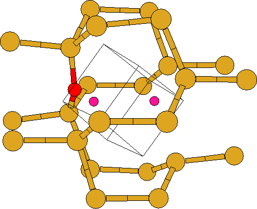

This possesses Si-O lengths of 1.73 and 1.72 Å with a Si-O-Si angle
of 143 . The Si-O bonds are longer than in VO2 and close to
those in the VO centre. There is very little reconstruction of the
Si-Si bonds in the divacancy and consequently there is an empty state
very close to a filled mid-gap state. The LVMs are given in
Table 5.1, and the structure is shown in
Figure 5.3. There is a single mode at 791 cm-1: almost
the same frequency as in the VO defect. Thus the calculations give no
support for an assignment of the 889 cm-1 defect to a V2O
complex [89]. It is then unlikely that V3O complexes have
high frequency modes and this casts doubt on the assignment
[78] of the 889 cm-1 line to this defect. In addition
the V2O and V3O defects do not have the required D2d
symmetry [83]. The table also shows the effect of replacing
a 28Si neighbour of O by 29Si.
. The Si-O bonds are longer than in VO2 and close to
those in the VO centre. There is very little reconstruction of the
Si-Si bonds in the divacancy and consequently there is an empty state
very close to a filled mid-gap state. The LVMs are given in
Table 5.1, and the structure is shown in
Figure 5.3. There is a single mode at 791 cm-1: almost
the same frequency as in the VO defect. Thus the calculations give no
support for an assignment of the 889 cm-1 defect to a V2O
complex [89]. It is then unlikely that V3O complexes have
high frequency modes and this casts doubt on the assignment
[78] of the 889 cm-1 line to this defect. In addition
the V2O and V3O defects do not have the required D2d
symmetry [83]. The table also shows the effect of replacing
a 28Si neighbour of O by 29Si.
Divacancy complexes are a common vacancy impurity, which combine with
Oi to form V2O. These centres are more common in heavily
damaged samples. V2O and V3O can, in addition to our studies,
be ruled out as candidates for the 889 cm-1 line on the basis of
various annealing studies. Lee et al showed V2O anneals out
at the same temperatures as VO [88]. Other studies show it to
anneal out at around 450  C to form V3O and V2O2
[89], with V2O2 going on to form either V3O2 or
V3O3 [96]. Although these results are not consistent
with each other, neither fits the annealing properties of the
889 cm-1 mode. For these reasons V3O can also be ruled out as
a candidate for the 889 cm-1 line.
C to form V3O and V2O2
[89], with V2O2 going on to form either V3O2 or
V3O3 [96]. Although these results are not consistent
with each other, neither fits the annealing properties of the
889 cm-1 mode. For these reasons V3O can also be ruled out as
a candidate for the 889 cm-1 line.
|  |
| Symm. | 28Si16O | 28Si18O | 28Si16O18O | 29Si16O |
| VO | ||||
| B1 | 787.4 | 38.1 | - | 0.9 |
| Expt. [75,85] | 831 | 33 | ||
| VO2 | ||||
| E | 806.5 | 38.8 | 0.0, 38.8 | 0.0, 1.0 |
| A1 | 656.4 | 18.5 | 8.8 | 1.3 |
| E | 574.2 | 3.5 | 0.1, 3.5 | 0.0, 2.7 |
| B2 | 563.8 | 8.6 | 4.7 | 1.4 |
| Expt. [75,84] | 894 (4 K) | 49 (300 K) | ||
| V2O | ||||
| A | 790.7 | 38.2 | - | 1.1, 0.9 |
| VO3 | 16O | 18Oc | 18Ob | 18Oa |
| A | 997.8 | 22.7 | 0.1 | 12.8 |
| A | 902.2 | 23.5 | 0.1 | 30.5 |
| B | 813.5 | 0.3 | 39.2 | 0.1 |
| A | 669.1 | 4.1 | 5.6 | 6.6 |
| A | 634.3 | 6.5 | 8.2 | 2.1 |
| B | 611.6 | 4.5 | 0.0 | 1.9 |
| A | 597.5 | 1.1 | 2.4 | 1.8 |
| Expt. [141] | 1005, 976, 910 |